Discover
Nieuwe ontwikkelingen ontdekken en prioriteren voor België.

Onderbouwde AI-intelligence voor Belgische CEO's, CFO's, CIO's en COO's. Met primaire bronnen, economische context en expliciete onzekerheden.
Waarom dit platform?
Het systeem onderscheidt observaties, prognoses en interpretaties. Hierdoor krijgt de directie geen schijnzekerheid, maar toepasbare hypotheses.
Nieuwe ontwikkelingen ontdekken en prioriteren voor België.
Bronnen, steekproeven, cijfers en beperkingen zichtbaar maken.
De implicaties vertalen naar concrete managementvragen.
Van bewijs naar managementvragen
Kies uw functie. Bekijk de prioriteiten, onderzoek de beperkingen en neem uw voorbeeldbrief mee.
Sprint 4 · Executive Brief
Kies een directiefunctie en genereer een lokale voorbeeldbrief op basis van de gecontroleerde referentierecords. Er wordt niets verstuurd.
AI-adoptie is financiële context, geen bewijs van projectrendement. De Vlaamse barometer is geen Belgisch totaal.
Voorstellen voor intern onderzoek, geen bronfeiten of berekende ROI. Eigenaar, waarden en planning zijn nog te bevestigen.
Sprint 4 · Intelligence Experience
Echte bronlinks, transparante prioriteiten en rolgerichte beslissingsvragen.
Prioriteitsscores zijn redactionele hypothesen en geen bewezen voorspellingen van ROI.
Sprint 2 · Trusted Evidence
Van elke cijfermatige claim naar een oorspronkelijke bron, datum en beperking.
Deze MVP demonstreert brontraceerbaarheid en kwaliteitsregels. Ze automatiseert nog geen full-text factchecking, crawling, PDF-analyse of onafhankelijke wetenschappelijke peer review.
Sprint 3 · Controlled Workflow
Onafhankelijke controlefasen, zichtbare blokkeringen en een menselijk goedkeuringsmoment.
De knoppen simuleren controles; ze vervangen geen onafhankelijke menselijke of wetenschappelijke verificatie.
Product Owner · 4 Sprint Proof of Concept
Vier doelgerichte increments binnen één geïsoleerde ontwikkelroute. De doelarchitectuur met echte autonome agents blijft een vervolgfase.
Een afzonderlijke dev-pagina, premium navigatie, NL/FR-taalwissel en responsieve toegankelijkheid.
Interactief prototypeStabiele claim-ID's, originele bronlinks, datum, bewijsclassificatie en methodologische beperkingen.
5 gecontroleerde referentierecordsGated reviewstatussen en lokaal auditspoor; externe publicatie technisch uitgeschakeld.
Simulatie van de reviewketenTrend Radar, functie- en sectorfilters, evidence-detail en downloadbare voorbeeldbrief.
Pilot-ready UX-demoJe kunt de interactie testen, maar er wordt geen e-mailadres opgeslagen of verzonden.